Roguelike run · planets 1-8 · three reviews · 2026-11-15
Planet Reviews
Three reviewers looked at the eight procedural planets as they are on main today (6x core world, commit 4494ad4f): one only at the looks, one only at whether they make good play, one only at the code. The graphics lead checked the looks brief first. Below is one list, most important first, with the reviewers' own pictures and numbers. Looks come first where two findings are close, since looks are your first concern.
Looks11findings. Planets 1-8, seeds 1 and 2, whole map at 1 s and 60 s, 116 close views at zoom 6, 12 and 24, five clips. Grey luma measured against the map files.
Play9findings. 64 planets measured for routes, chokes, walls and sight; the six designed maps as a control; six short games by the AI hands.
Technical7findings, all fixed in this thread with a test each (see the end). 320 planets swept; walking maps timed at 1x and 6x.
Tags say who would make each change: map is this thread (levelgen), drawing the graphics and ground threads (view.wgsl, view.rs), run the roguelike run thread. [M] is measured, [J] a reviewer's judgement.
1
Zoomed out, the big planets switch to a different, unshaded picture
Looksdrawing
Below zoom 1 the view skips its shading (src/world/view.rs:731-737). The 6x core world fits a 1280x800 window at zoom 0.86, so its whole-map view becomes navy ground, brown rock and flat crystals brighter than the slime. The same happens on any screen under about 900 px tall, and the minimap uses this picture on every planet. Nobody had looked below zoom 1 before. [M]
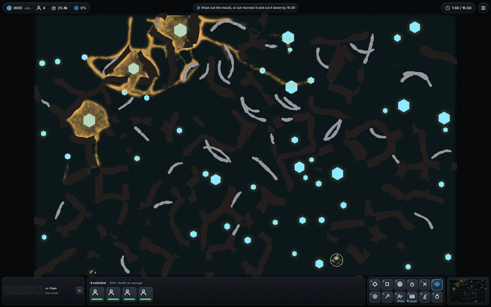
Core world, seed 1, fit to 1280x800 (zoom 0.86), 60 s. The far view: no shading, rock brown, crystals brighter than the slime.
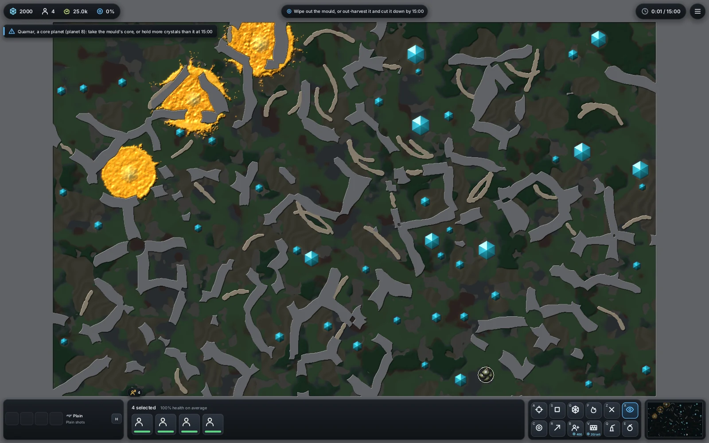
The same world fit to 1600x1000 (zoom 1.07), 1 s. The shaded picture the game draws everywhere else.
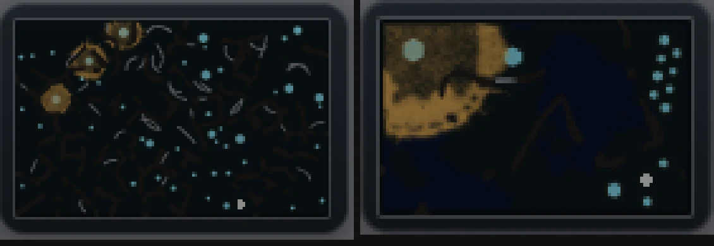
Minimaps: the 6x core world (left) and a 1x fen (right). Both are the far view, so the minimap never looks like the game.
FixRun the shaded path below zoom 1 at fine=1; failing that, give the far view the shaded view's colours.
2
Rock and soft rock are brighter than the thin slime, and soft rock than the crystals
Looksdrawing
The style guide's value order puts rock and walls below thin slime, and crystals above both. On all 14 planet-seeds measured, rock (98) and soft rock (107-123) are brighter than the slime's thin film, and soft rock is brighter than the crystals on 12 of the 13 that have it. The film does stay above every bare soil: only 1-10% of newly covered pixels are within 10 levels of the ground under them. [M]
Planet, seed
Thin film (10th pct)
Slime median
Rock
Soft rock
Crystal
Brightest soil or plant
1 meadow, 1
71
97
98
123
109
81
1 meadow, 2
68
97
–
123
126
51
2 barrens, 1
86
127
98
123
121
59
2 barrens, 2
85
127
98
–
113
60
3 fen, 1
66
114
98
122
123
51
3 fen, 2
66
108
98
123
111
59
4 valley, 1
67
113
98
123
122
57
4 valley, 2
76
154
98
–
102
57
5 jungle, 1
49
114
98
123
116
87
5 jungle, 2
51
114
98
123
106
122
6 highlands, 1
63
111
98
107
106
51
6 highlands, 2
64
112
98
123
96
49
7 caves, 1
56
120
98
98
93
61
7 caves, 2
51
100
98
98
94
56
Grey luma, 0-255, from the whole-map frames at 1 s and 60 s registered to the map files (raw/aesthetics/measure.py). Marked: brighter than the thin film. Planet 8 is left out because at 1280x800 it is the far view (finding 1).
FixRock to about 70 and soft rock to about 80, or a film floor of about 110. Rerun measure.py until the film beats the walls on every planet.
3
The biomes differ only in layout, so close up they look alike, and three of them play alike
LooksPlaydrawingmap
On planets 1-6 the ground's median luma is 33-51: every biome is the same dark green-grey with different shapes on it. [M]
Grey thumbnails at 1 s: 5 of 8 biomes named by eye (Caves, Core, Jungle, Highlands, Barrens). Meadow, Fen and River valley are dark ground with black water. [M]
At zoom 12, your usual view, with no nest or crystal in frame: 4 of 8 by eye. Meadow, Fen, River valley and Core are interchangeable; the core world at zoom 12 is a meadow. [M]
In play, barrens and fen are no further apart than two seeds of one biome (1.01), fen and valley 1.11, meadow and barrens 1.13. 6 of 8 fens rolled only pools, which soldiers walk through, so for soldiers they play as meadows. [M]
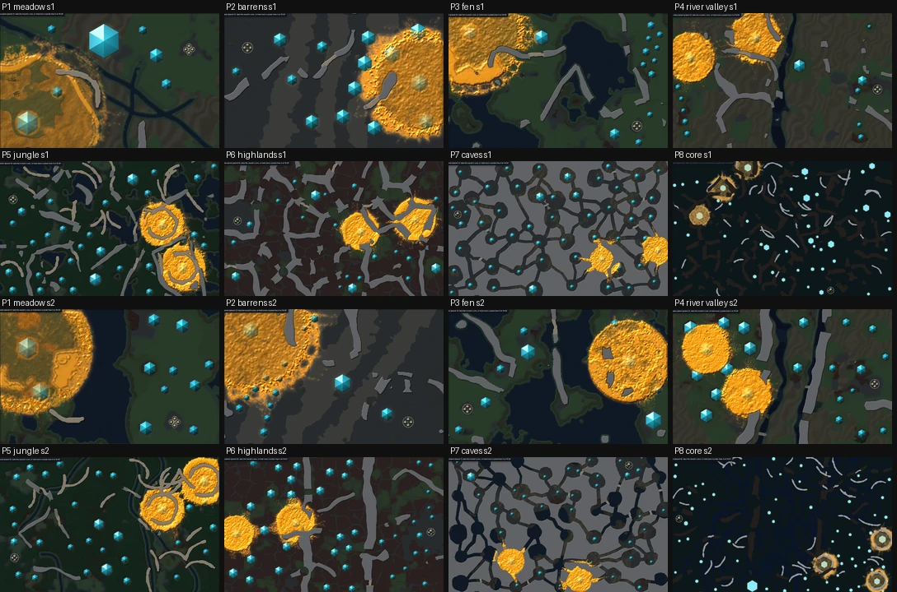
Planets 1-8, seeds 1 (top two rows) and 2, at 1 s. The slime's start disc is the same bright circle on every planet.
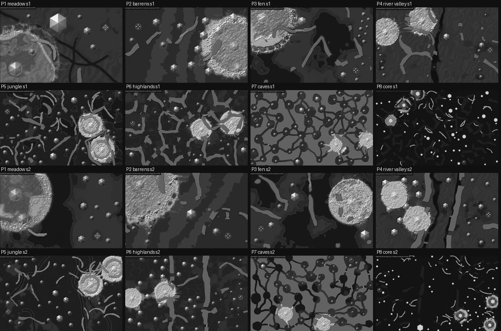
The same in grey: 5 of 8 nameable.
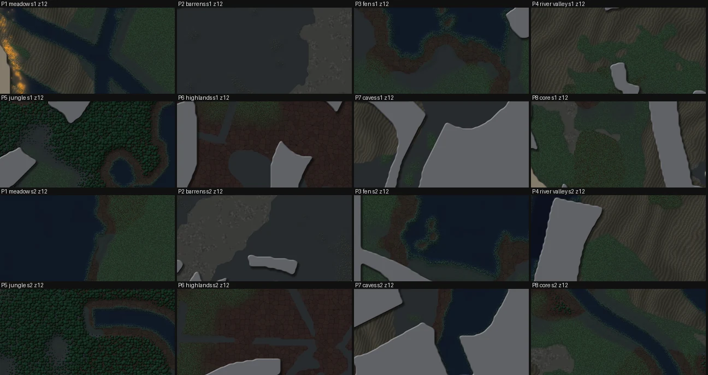
Zoom 12, no nest or crystal, seeds 1 and 2: 4 of 8 nameable by eye. Jungle's canopy is the best close look in the game; Highlands' crack mesh reads as floor tiles.
Most alike
First
Second
Third
Looks, zoom 1
Meadow / Fen
Barrens / River valley
Jungle / Highlands
Looks, zoom 12
Meadow / Fen
River valley / Core
Fen / Highlands
Play
Barrens / Fen
Fen / River valley
Meadow / Barrens
FixDrawing: a zoom-12 signature for each biome from its own soil materials and plant kinds, as RimWorld and Don't Starve do. Map: a signature ground per biome (cracked ash on Barrens, say), and fens that roll lakes 3:1 over pools.
4
Almost no nest has both a narrow front door and a wide way round: 4 of 112
Playmap
The checks only ask whether everything can be reached. The planets come out as two kinds of play, not eight. [M]
Open (planets 1-3, most jungles and cores): a route at least 16 dish cells wide reaches every nest, but holding a line takes 40-110 cells of wall, 800-2,200 food against a 2,000 start. Turtles have no cheap choke.
Funnels (planets 4, 6 and 7): every route to every nest passes a gap 4-14 wide. Gun builds have no open approach on any of 8 seeds, and the core world lacks one on 5 of 8.
Planet
Nests (seeds 1-8)
Direct way at most 10 wide
Some way at least 16 wide
Both
1 meadow
8
1
7
1
2 barrens
8
3
6
2
3 fen
8
2
6
0
4 river valley
16
12
0
0
5 jungle
16
9
5
1
6 highlands
16
13
0
0
7 caves
16
16
0
0
8 core
24
15
9
0
Widths in dish cells (a gun reaches 24), walls kept; the direct way is the widest route at most 15% longer than the shortest (raw/fun/localchoke.py).
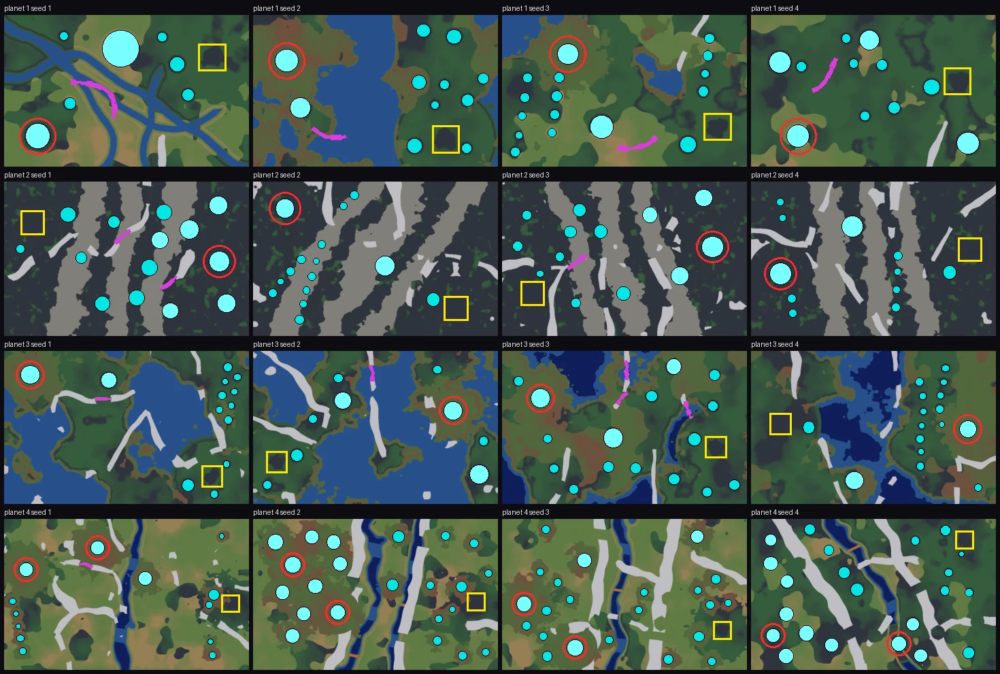
Planets 1-4, seeds 1-4, from the map files. Grey rock, blue water (dark: deep), magenta soft rock, cyan crystals, red rings nests, yellow square the landing. Each map scaled to the same width.
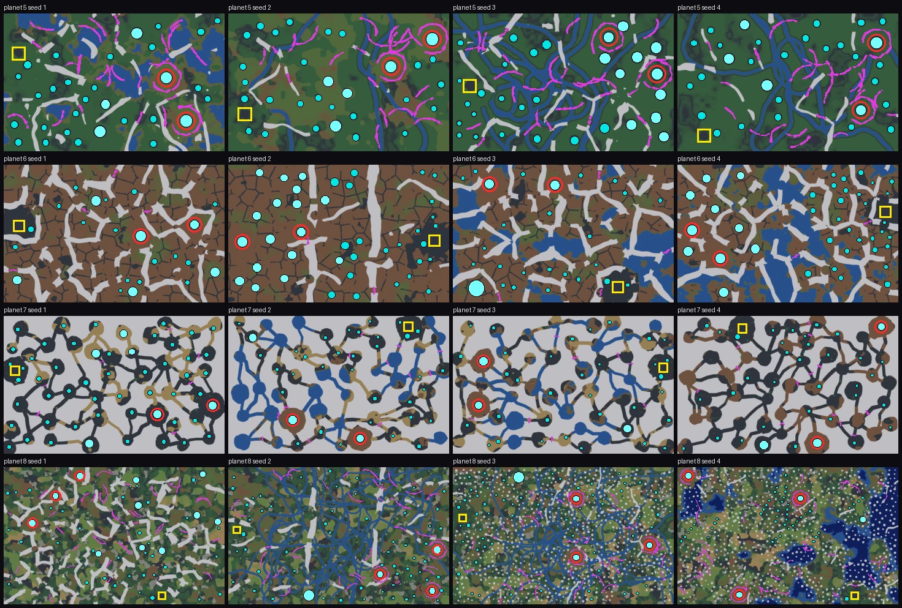
Planets 5-8, seeds 1-4. Highlands and caves funnel every nest; jungle and core are open fields with clutter.
Fix (this thread)Make the checks ask for a front door and a back road for each nest. On funnel planets widen one pass or tunnel to 16; on open planets lay a ridge with a pass across the direct way. First experiment: 50 seeds a biome, count the nests that pass.
5
The core world doesn't read as the climax
LooksPlaymaprun
Looks: at zoom 12 it is a meadow. Seed 1 is covered in rock fragments and seed 2 in a web of streams, because the stream count grows with the square root of the area. The hedge rings round its nests make bullseyes. [M]
The slime covers 3% of the whole map at 60 s, against 24-26% on planet 1. These renders used the default slime, not the run's bigger one, so this may be smaller in a real run. [M, unconfirmed in the run]
Play: nests are kept 280 cells apart at every size. At 6x the nearest pair is 0.14-0.19 of the map's width on 5 of 8 seeds, and on seed 1 all three nests share 7% of the map. Its play features sit close to highlands (1.06) and jungle (1.11): a remix. Seed 5 has four parallel rivers and a widest route of 4. [M]
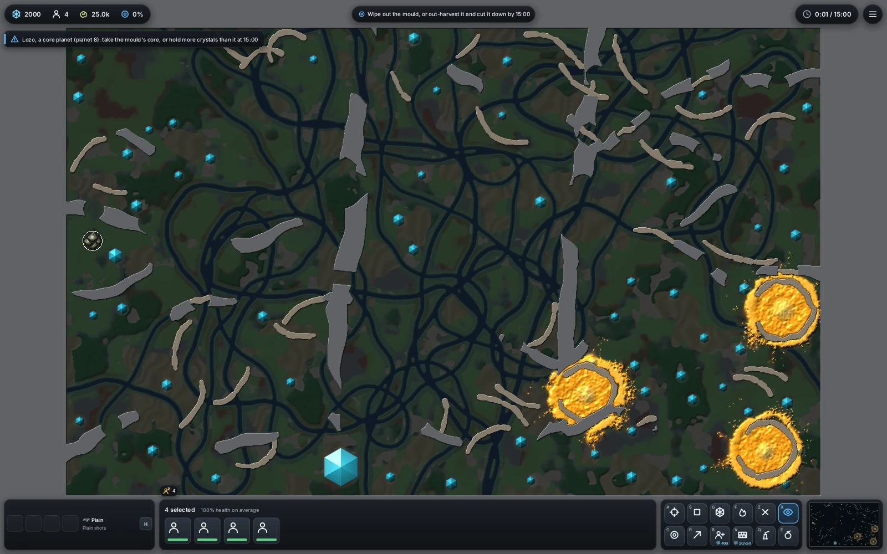
Core world, seed 2, 1 s: the stream web over the whole map.
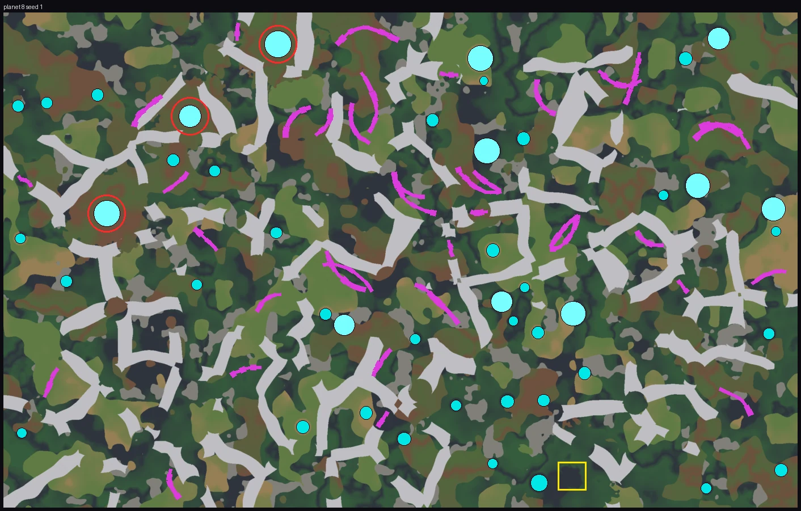
Core world, seed 1, map file: three nests (red rings) in the top-left corner, sharing 7% of the map.
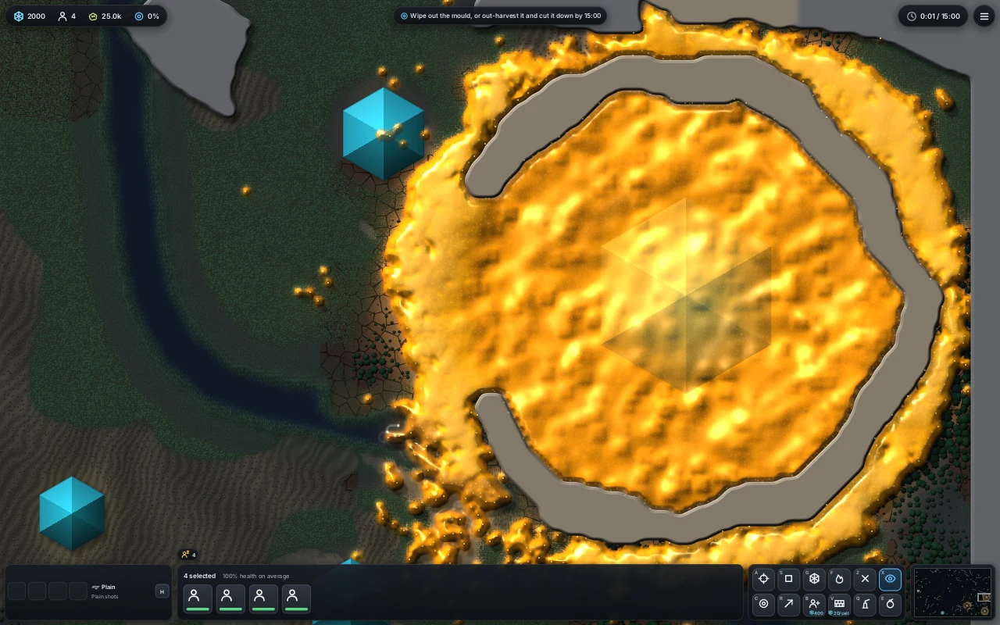
Core world, seed 2, a nest at zoom 6, 1 s: a perfect gold disc in a beige ring, at the map's edge.
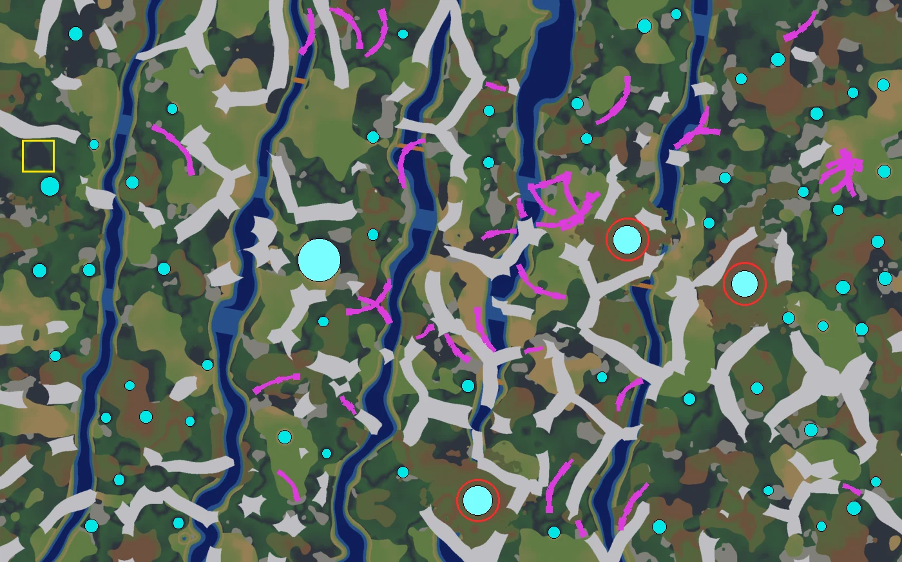
Core world, seed 5, map file: four parallel rivers, the same obstacle four times; widest route 4.
FixMap: nests 0.3 of the map's width apart; streams capped at the 1x count; each ring broken into two or three offset arcs. With the run thread: grow the slime before you land, by area, so its trail and the plants it burnt stain the ground and the core world arrives already digested.
6
The run's pace is one steady climb with no breather and the same clock and opening everywhere
Playrunmap
Planet
Area
Nests
Slime (x planet 1)
Walk to far nest
Difficulty / novelty [J]
1 meadow
0.6
1
1.0
14 s
low / high
2 barrens
0.8
1
1.6
18 s
low / low
3 fen
1.0
1
2.3
21 s
low / low
4 river valley
1.4
2
3.7
27 s
spike / high
5 jungle
2.0
2
6.0
32 s
up / mid
6 highlands
2.8
2
9.3
40 s
up / low
7 caves
4.0
2
14.7
56 s
up / high
8 core
6.0
3
24
60 s
up / low
The slime grows about 1.6x a planet with no breather: likely bored on 2-3, swamped on 4 (twice the nests and the first funnel), slogging on 7. [J]
The clock is 900 s on every planet; your "15-20 minutes to an hour" isn't wired up. [M]
Every planet opens the same way: the first crystal is 12-26 cells from the landing on 64 of 64. [M]
Crystal energy per unit of area falls from 4 to 1 between planets 1 and 8. Nothing says so. [M]
FixRun: the clock grows with area; a smaller rich planet as a breather around planet 6 (as Noita's Holy Mountain is between biomes). Map: the landing crystal's distance and size set per biome; the crystal thinning named as a difficulty dial, or big crystals scaled with area.
7
Caves: rock is the backdrop's colour, and every tunnel is 4-6 wide
LooksPlaydrawingmap
Cave rock is (96, 98, 102), the colour of the backdrop outside the world, so the map's edge vanishes, and the flat rock field turns the caverns into a node graph. In play, every route is 4-6 wide on 8 of 8 seeds and the mean sight line is 15-17, under the gun's reach of 24, so range upgrades are wasted there. [M]
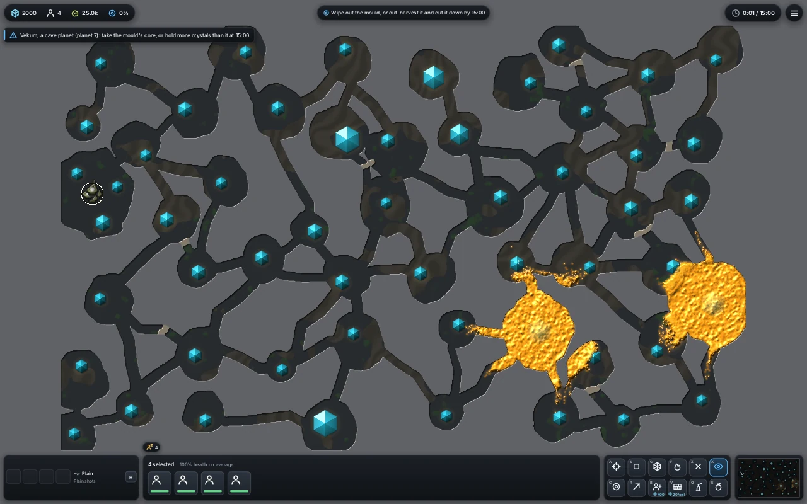
Caves, seed 1, 1 s: rock and the backdrop are one grey; the caverns read as a diagram.
FixDrawing: a darker backdrop and darker, textured rock; perhaps no sky light, so only crystals and slime light the caverns (The Riftbreaker, Noita). Map: irregular caverns, tunnels 5-15 wide, a cavern arena or two.
8
Clay cracks and plant crowns are drawn through the slime
Looksdrawing
view.wgsl:1592-1593 fades them by the film's computed thickness, not by how much film is drawn, so the clay's crack mesh shows on top of thick slime and plant crowns show as dark specks in the film. [M]
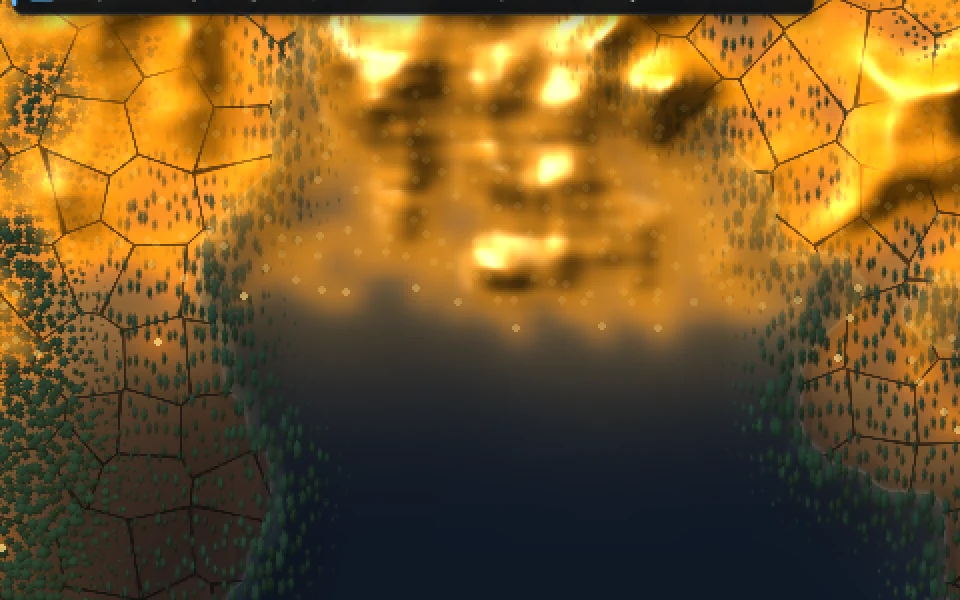
Meadow, seed 2, zoom 12: the crack mesh drawn over the slime.
FixFade them by the drawn film's cover.
9
Fords can't be seen, bridges are ragged, and deep water stops only you
LooksPlaymapdrawing
Fords are 6-7 luma off deep water: invisible at zoom 1, and box-shaped. [M]
The bridge deck follows the river's rough outline and has plank artefacts (levelgen.rs:1441-1446). [M]
The slime crosses deep water at 0.2 of its speed; on valley seed 1 it was on the squad's bank by 150 s. A moat that stops you, not it. [M, J]
Lakes and their reed fringes look good. [J]
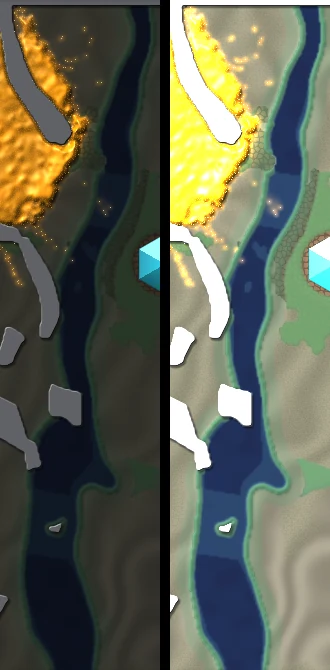
Valley, seed 1, zoom 1: as drawn (left) and with contrast raised 3x (right), where the two fords show.
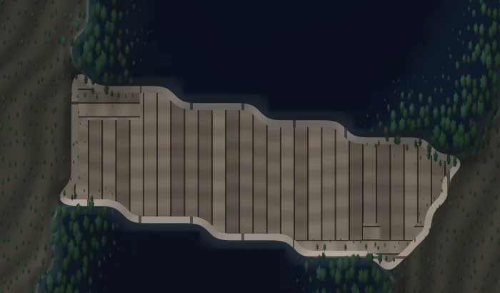
Valley, seed 2, a bridge at zoom 24: the deck takes the river's ragged edge.
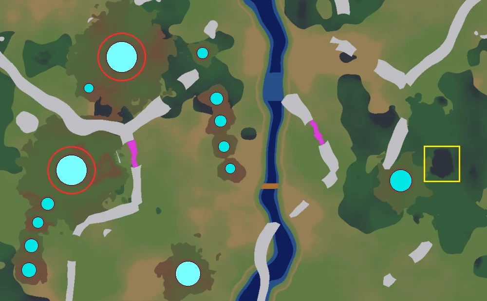
Valley, seed 6, map file: the ford (light blue) and the bridge (brown) are the only ways over.
FixMap: a straight deck running past both banks, and a ford edge without the roughness noise. Drawing: shallow water at least 15 luma above deep. The moat is your call (question 1 below).
10
Hedges read as interface, and nests sit on the map's edge
Looksdrawingmap
Soft-rock hedges are beige tubes with a soft shadow, brighter than the crystals. They cross lakes and don't look grown; where one meets rock the seam is a 25 px blur. [M]
6 of the 16 first nests sit 55 world cells from a map edge, so the slime's home is cut off by the frame. Every start is a perfect gold disc. [M]
In play the gaps in the nests' rings make natural kill boxes, which is good. [J]
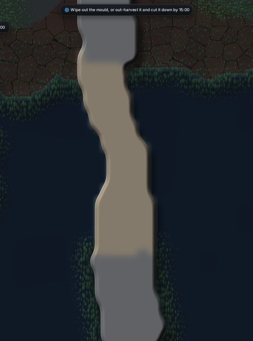
Fen, seed 2, zoom 12: a hedge laid across water, and its blurred joint with rock.
FixDrawing: a plant-like hedge material and a crisp joint. Map: no hedges on water; nests at least 120 world cells from the edge. Slime thread: a ragged start instead of a disc.
11
Soft edges, a still front and a dim fire
Looksdrawing
Rock's lit rim is crisp at zoom 24, but its shaded side is a soft band of 20-25 px. Slime over water is soft too. [M]
Fire is a soft orange-red blob about 40 px across. Its brightest pixels (179) don't beat the slime's (181), and its hue sits right beside the slime's amber. [M]
From 55 to 59 s the slime's front stands still at the reeds and the water; only its body shimmers. [M]
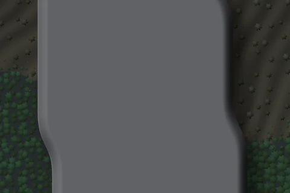
Meadow, seed 1, rock at zoom 24.Fire, meadow seed 1, zoom 12, 4 s. No brighter than the slime.The slime's front, fen seed 1, zoom 12, 55-59 s.
FixA 2 px shade plus a cast shadow for rock; fire with a crisp edge, brighter than the slime.
What already works
The jungle canopy is the best close-zoom look in the game, and plant patch edges are smooth at zoom 24.
Plants no longer cover the bare biomes edge to edge (Barrens 10.6% cover, Caves 4%), a fix from the first art review.
Crystals are the only cyan on the map; lakes, reed fringes, sand ripples and dunes look good; the landing is a clean pad.
Two seeds of a biome do give different maps, and caves stand apart from every other biome in play.
The thin slime film is above every bare soil.
Technical: all seven fixed in this thread
Each fix has a test. They go up as one pull request with this report.
Finding
Before
After
A squad steered into rock waited for a new walking map every move
26.3 s round a bar at 1x (12.9 s with whole maps); never in 60 s at 6x
13.6 s at 1x, 16.4 s at 6x
The walking-map cache at 6x held 17 maps
24 live goals: 26% of goal-steps unserved, maps rebuilt for ever
34 maps (128 MB); 24 goals served every step
Walls going up in quick succession restarted the map being built
a wall every 6 steps or less: no map in 600 steps at 6x
a wall every 2 steps: served within 30 steps
The checks walked the dish's rim, which the game can't
planet 5 seed 39 passed with 3 of 20 crystals reachable in the game
the 12-cell rim is shut in the checks
The fallback map was neither open nor checked
6 of 96 forced fallbacks failed their own checks
an open plan, up to 4 tries; 32 of 32 pass
A wall worn to rubble read back the whole ground buffer
3.9 MB at 6x, about 3 ms on the 1070 (estimate)
only the wall cells are read
Test gaps
the 6x pin repeated planet 8 seed 1; no scheduling tests
six new pins (pillars, oases, lakes, ridges over a river, cave pools, a 6x core); four walking-map tests
Still to do: the pins have only run on Linux. The PC runner can run them on Windows.
Questions only your play can answer
Is a moat that stops only you fun or unfair?
Do planets 2 and 3 feel like the tutorial again?
Is 15 minutes enough at 6x, and is a minute's walk to the front fine?
Are the 4-wide cave tunnels tense or tedious?
Do the jungle's hedges read as a maze or as clutter?
Is the same opening on every planet a comfort or sameness?
Frames from larder-world map=planet:D:S seed=S hand=idle on software Vulkan (llvmpipe) at 1280x800 unless stated; layouts drawn from cargo run --release --example planets map files. The three full reports, the briefs and every script are in Reports/levelgen-review-2026-11-15/.